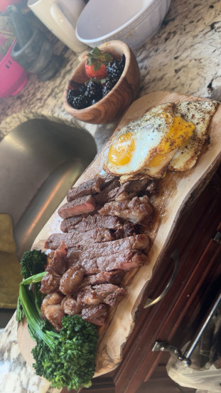

This is Hennessy. The youngest out of my three kittens. She is the most friendly one and loves to bite affectionately. She's very cute and her pupils tend to dilate when she has the zoomies or is having a lot of fun. Hennessy is a calico breed and she was named after the bottle of Hennessy because of her fur color. A fun fact about her is instead of meowing, she tries to mimic you so it sounds weird. Finally, she is a cuddle bug and if you leave your door open at night, she'll snuggle with you.
This is a sunrise picture that I took in Dominican Republic last year. I woke up at 5am to watch this sunrise and it was one of the most heavenly moments in my life. I vividly remember how warm it was with the perfect breeze and how there was no one on the shore but me. I love pictures like this and I plan to travel back to the DR this year.

Above is my favorite meal to cook. It's steak, fruits, eggs, and some sort of vegetables. I love this meal and it is popularly known as the "tiktok meal". It's really yummy and I feel like I could eat it every day for every meal. The steak is medium rare and the fruits are also drizzled with honey. The eggs are cooked in the leftover fat and butter from the steak.